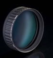
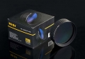

器材库 > 近摄镜 > 多层镀膜近摄镜

详细规格
发布日期
2012
该产品暂无存档的网友点评
产品图 / 样片
耐司 多层镀膜近摄镜

耐司 多层镀膜近摄镜
评测 / 相关文章
- 详细内容 （存档）
- ［资讯］PIE2012 专访耐司滤镜销售总监袁国奎 （存档）
- ［资讯］PIE 2012：耐司展台一览 （存档）
相关文章
- ［资讯］NiSi 多层镀膜近摄镜 （存档）
- ［资讯］PIE2012 专访耐司滤镜销售总监袁国奎 （存档）
- ［资讯］PIE 2012：耐司展台一览 （存档）